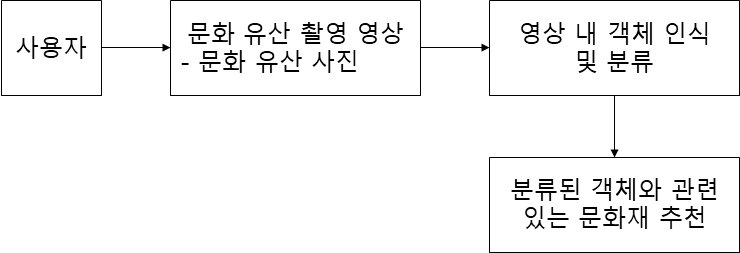
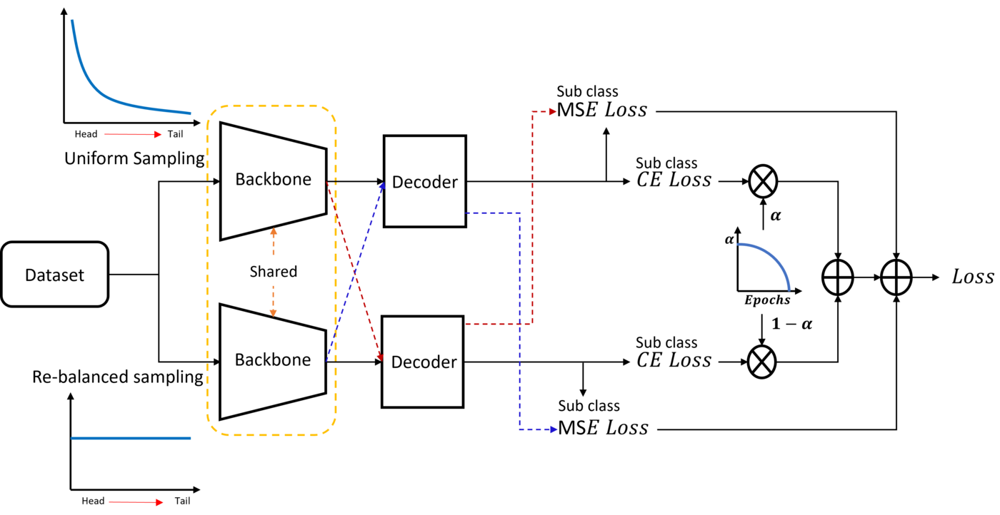
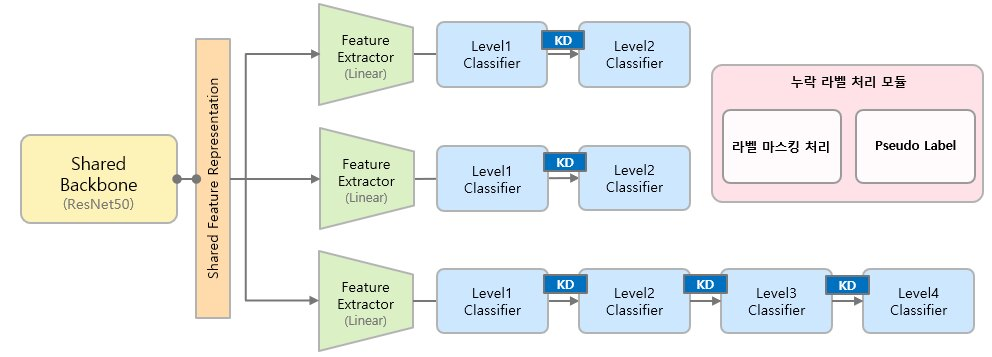
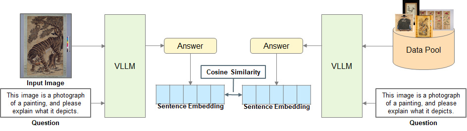
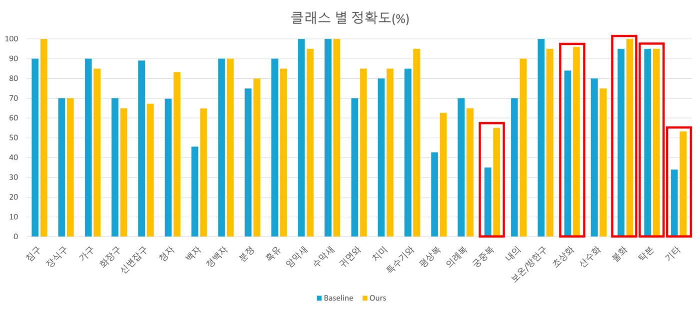

개인 맞춤형 문화유산 해설을 위한 문화유산 분류 테스트베드 구축
e-museum·국립중앙박물관 문화유산 데이터의 긴꼬리·계층적 구조를 다루는 딥러닝 분류 알고리즘과 Vision-LLM 기반 주제 검색을 개발하고, 이를 적용한 분류/검색 테스트베드를 3개년에 걸쳐 v1.0부터 v3.0까지 구축한 과제.
Versions
- v1.0 (2023) — 개인 맞춤형 문화유산 해설을 위한 문화유산 분류 테스트베드 구축. e-museum 크롤링으로 5개 상위·25개 하위 클래스의 계층적 데이터셋을 구축하고, 긴꼬리(Long-tail) 분포에 강인한 일관성 손실·Focal loss 기반 계층적 분류 학습 전략과 제로샷/미분류 객체 처리를 다룸.
- v2.0 (2024) — 개인 맞춤형 문화유산 해설을 위한 문화유산 분류 테스트베드 v2.0 구축. 데이터셋을 205개 세부 클래스(8개 그룹)로 확대하고 통합 분류기를 도입(검증 Accuracy 85.85%). Vision-LLM과 Sentence Embedding을 결합한 문화유산 주제 검색 기능을 신규 추가(mP@1 66.67%).
- v3.0 (2025) — 디지털 문화유산 고속 브라우징을 위한 문화유산 분류/검색 테스트베드 v3.0 구축. 국립중앙박물관 기증 데이터(185개 세부 클래스, 최대 4계층)로 전환하고, 멀티헤드 어텐션 기반 계층적 지식 증류 분류로 검증 Accuracy 96.67% 달성. 주제 검색을 최신 Vision-LLM(Qwen2.5-VL)으로 고도화(mP@1 79.17%).
Overview
가상공간 내 문화유산 분류·검색을 위한 브라우징 기술은, 문화유산에서 드러나는 시각적 정보로 인식·추론 가능한 스토리텔링 요소와 전문 학예사가 구축하는 비시각적 정보를 결합하여, 관람객의 관심사에 맞춘 문화유산 해설 콘텐츠를 생성함으로써 맞춤형 관람 경험을 제공하는 기술이다. 이를 위해 양식·용도·사용 계층별로 문화유산을 분류하는 기능이 요구사항에 맞게 설계되고, 분류 성능이 점차 발전할 수 있도록 설계되어야 한다. 본 과제는 한국전자통신연구원(ETRI)의 수요에 따라 한밭대학교 산학협력단이 수행하였다.
문화유산 데이터는 잘 정제된 공개 데이터셋과 달리, 소수 클래스에 데이터가 집중되는 극단적인 긴꼬리(Long-tail) 분포를 가지며 상위·하위 분류로 이루어진 계층적 구조를 동시에 갖는다는 점에서 차별화된다. 이러한 특성을 효과적으로 다루기 위해 긴꼬리 분포에 강인하면서 계층 정보를 활용하는 학습 전략과, 학습되지 않은 미상 문화유산에 대응하는 제로샷(Zero-shot)·퓨샷(Few-shot) 방법론을 연구하였다.
과제는 3개년에 걸쳐 발전하였다. 2023년(v1.0)에는 e-museum 데이터(5개 상위·25개 하위 클래스)를 대상으로 긴꼬리·계층 분류 알고리즘과 분류 테스트베드를 구축하였다. 2024년(v2.0)에는 데이터셋을 205개 세부 클래스로 확장하고 ML-Decoder 기반 통합 분류기를 적용하는 한편, Vision-LLM 기반 문화유산 주제 검색 기능을 새롭게 추가하였다. 2025년(v3.0)에는 국립중앙박물관 기증 데이터(185개 세부 클래스, 최대 4계층)로 전환하고, 멀티헤드 어텐션 기반 계층적 지식 증류로 분류 정확도를 크게 끌어올렸으며 주제 검색에 Qwen2.5-VL 등 최신 Vision-LLM을 도입하여 디지털 문화유산 고속 브라우징을 지원하는 분류/검색 테스트베드로 고도화하였다.

Approach
- 데이터셋 구축: e-museum 웹사이트 크롤링(v1.0~v2.0)과 국립중앙박물관 기증 데이터(v3.0)로 양식·용도·사용 계층별 문화유산 데이터셋을 상위/하위 계층 구조로 구축(v1.0 5개 상위·25개 하위 → v2.0 205개 세부 클래스/8개 그룹 → v3.0 185개 세부 클래스/최대 4계층).
- 긴꼬리·계층 분류: 소수 클래스에 데이터가 집중되는 긴꼬리 분포에 강인하면서 상·하위 계층 정보를 함께 활용하는 분류 학습 전략을 설계하고, 단계적으로 지식 증류 기반 계층 분류로 고도화.
- 제로샷·미분류 처리: 학습되지 않은 미상 문화유산에 대응하는 제로샷·멀티라벨 확장과 미분류 객체 탐지·처리 방법을 적용.
- 통합 분류기(v2.0): 계층 제약 없이 전체 클래스를 학습한 뒤 추론 단계에서 그룹 단위로 최종 분류하여, 계산 효율과 노이즈 견고성을 확보.
- Vision-LLM 기반 주제 검색(v2.0~v3.0): Vision-LLM으로 회화 이미지를 풍부한 텍스트 설명으로 변환하고 Sentence Embedding으로 의미론적 벡터화한 뒤 유사도 기반 최근접 검색을 수행.



Methods & Tech
Results
분류 알고리즘은 검증 데이터셋 기준 v2.0에서 Accuracy 85.85%(목표 80% 이상), v3.0에서 Accuracy 96.67%(목표 83% 이상)를 달성하였다. v1.0에서는 제안 학습 전략을 적용한 모델이 베이스라인 대비 학습 데이터가 적은 상위 클래스에서 성능이 월등히 높고, 상위 클래스 오분류가 줄어 안정성이 향상됨을 정성적으로 확인하였다.
문화유산 주제 검색은 회화 120종·388장(12개 세부 클래스) 데이터셋에서 v2.0 mP@1 66.67%(목표 62% 이상), v3.0 mP@1 79.17%(목표 70% 이상)를 기록하여 Vision-LLM 기반 멀티모달 접근이 시각적 특징과 의미론적 맥락을 동시에 고려하는 데 효과적임을 실증하였다.

Status
3개년 연속 과제로 수행 완료. v1.0은 2023년 11월, v2.0은 2024년 11월, v3.0은 2025년 11월에 각각 용역 수행 결과 보고서를 제출하였으며, 각 연차마다 데이터셋 구축·분류 및 검색 알고리즘 개발·테스트베드 산출물을 납품하였다.